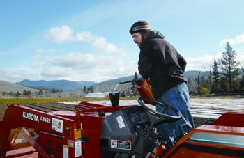
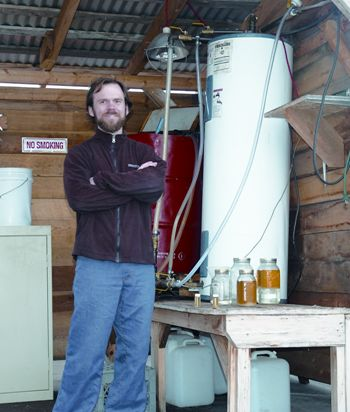
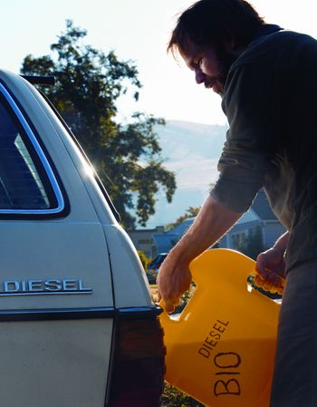
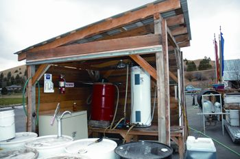
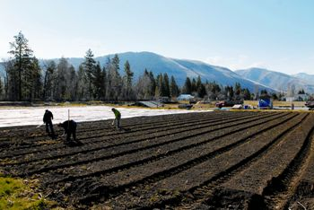
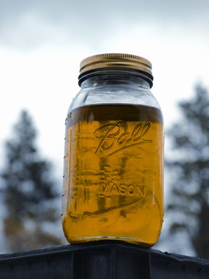

I moved to Missoula in December 2006 to enter the environmental studies graduate program at The University of Montana. There I found an active community motivated by the desire for self-sufficiency. I soon was introduced to the people and activities at one of the local hubs of sustainability, the Program in Ecological Agriculture and Society (PEAS) farm.
The PEAS farm is managed collaboratively by the University and the nonprofit Garden City Harvest. The farm is run by student interns, volunteers and a director from the environmental studies program. The nine-acre farm emphasizes sustainability and provides an opportunity to contribute to the local food pantry. On an annual basis, the farm provides 20,000 pounds of vegetables to the food bank and 80 Community Supported Agriculture (CSA) members who pay an annual “subscription” to receive a weekly share of the produce throughout the season.
Initially, my interest was piqued by the farm’s focus on promoting local food systems. In addition to planting, weeding and harvesting vegetables, I built fences, planted trees, fixed sprinklers, moved rocks and fed livestock. The more involved I became, the more I realized that every aspect of the farm related to my graduate work in some way. Over time, my interest in sustainable fuel sources has grown.
With a vision of helping others achieve greater self-sufficiency, PEAS students have started a study to test the viability of running a tractor on vegetable oil produced on the farm. We hope the benefits of running a tractor on vegetable oil will help small-scale farmers achieve self-reliance, expand their markets for oilseed crops and reduce their environmental footprint.
In the 1890s Rudolf Diesel designed the original diesel engine to run on vegetable oil, but modern diesel engines are intended to run on petroleum diesel. For those interested in making their own fuel for diesel engines, the world of biofuels offers two options: biodiesel or vegetable oil. Using biodiesel requires modifications to the vegetable oil itself; using straight vegetable oil requires modification to the diesel engine.
Both biofuels have pros and cons, plus complicated nuances to their use and production. But for those with enough patience and enthusiasm to embrace biodiesel or veggie oil fuel, the rewards can be great.
For starters, straight vegetable oil is too thick to burn in a standard diesel engine. In cool weather, it becomes thick as butter, clogging fuel lines and injectors. But a diesel vehicle can be modified to run on straight vegetable oil by using either a dual-tank or single-tank fuel system.
The dual-tank system requires one tank for diesel and another for vegetable oil - plus a system to switch from one fuel to the other. The engine starts on diesel fuel, but switches to run on vegetable oil after heat produced by the engine warms the vegetable oil to about 160 degrees Fahrenheit. Before shutting off the vehicle, diesel fuel is cycled through the fuel lines to purge the system of vegetable oil. (For more information, see Would you use Veggie Oil to Fuel Your Vehicle?) Because diesel fuel is required for starting the vehicle and clearing the lines before shutdown, a dual-tank system is better suited to vehicles that run for extended periods or distances.
A single-tank system preheats the vegetable oil using electric heat (plus the additional heat produced by the engine when it’s running) and uses modified injectors and glow plugs that are optimally suited to ignite and combust vegetable oil. (New diesel engines have precise fuel requirements that need to match the chemistry of the oil, but older engines have a better tolerance for a range of vegetable oils.)
Considering the frequent start-and-stop nature of our small-farm work, we decided a single-tank system would be the appropriate choice to run vegetable oil in our tractor.
Thanks in part to a grant from the National Center for Appropriate Technology, an organization that promotes technologies that conserve energy and resources, we have retrofitted a Kubota tractor with an Elsbett single-tank fuel system to run on straight vegetable oil produced in eastern Montana. (Elsbett is a German company that manufactures conversion kits and engines designed to run on straight vegetable oil.) The performance of this tractor is being measured and compared with the performance of two similar tractors used on comparable farms nearby. One of these tractors uses a biodiesel blend; the other uses petrodiesel.
If we confirm that a single-tank system is a viable option for running a tractor on straight vegetable oil, we plan to grow an oilseed crop and produce our own fuel. We estimate we’ll need to devote about 5 percent of our crop land to oilseed (probably canola) production annually to provide enough oil to power the tractors. Others estimate it would require up to 30 percent of a farm’s land to produce enough fuel to make a farm self-sufficient. See “Do you have enough land for food and fuel?” below.
The PEAS farm also houses a biodiesel processor to convert used cooking oil to biodiesel for the Garden City Harvest tractor (and originally for our Kubota). The facility provides a safe location for students to make biodiesel and store the supplies used in the process. Since its arrival at the farm, several students (including me) have taken advantage of this resource to produce fuel for their own vehicles.
Last summer, I participated in my first biodiesel experiment. It was intimidating, but the process was relatively straightforward. Basically, biodiesel is produced by a chemical reaction involving vegetable oil, methanol and potassium hydroxide or another catalyst. Glycerol is a byproduct of the process.
We took 20 gallons of used fryer oil (from a local restaurant), strained out the food particles, and pumped the oil through a series of braided hoses and copper valves into a recycled water heater.
As the oil cycled through the processor, we took a sample and tested it to determine the amount of potassium hydroxide we would need to add to the used oil. We added the necessary ratio of methanol to the potassium hydroxide. When the processor brought the oil temperature to 130 degrees, we added the chemicals to the processor and allowed it to cycle for two hours. The chemicals and heat transformed the used oil into biodiesel. When the reaction was complete, we unplugged the processor. As the oil cooled overnight, a dense layer of glycerol settled to the bottom of the tank. The next morning we drained off the glycerol, which contains methanol and other contaminants that must be removed prior to composting. (Some people use it to make soap after it’s detoxified.)
The last stage of the process was to transfer the biodiesel to a separate barrel to “wash” it. The washing process is done by applying a light mist of water to the top of the biodiesel. The suspended impurities in the biodiesel adhere to the water drops as they percolate to the base and are drained from the tank. At this point, the home-brewed biodiesel is ready to use in any diesel engine. From 20 gallons of used fryer oil, we produced 16 gallons of biodiesel.
Fuel quality issues from incomplete reactions sometimes can cause problems with home-brewed biodiesel. At the PEAS farm, the process of brewing quality biodiesel has evolved through trial and error. Thanks to the careful attention of our home-brewers, we have not experienced any fuel related problems using biodiesel produced at the farm.
Biodiesel combustion emits less carbon monoxide, carbon dioxide and hydrocarbons than combustion of a similar amount of petrodiesel. (The U.S. Environmental Protection Agency previously stated that nitrogen oxide emissions from biodiesel were higher than from petrodiesel, but that research is being re-examined.)
For many, there’s an economic appeal to making biodiesel. It was relatively easy for us to make biodiesel for about a dollar per gallon or less. Utilizing salvaged materials, the biodiesel processor at the PEAS farm was put together for about $150. Local restaurants give away used vegetable oil, and methanol can be purchased for $4 per gallon.
The cost of vegetable oil has risen significantly (a major concern for commercial biodiesel producers). But for those considering straight vegetable oil as a fuel, new vegetable oil is not the only option. Many restaurants will give you used vegetable oil, which needs to be thoroughly filtered before use - but it’s free. The drawback is the initial cost of converting an engine. The Elsbett single-tank conversion kit installed in the farm tractor cost $1,200 and is comparable in price to other single-tank modifications. Dual-tank systems cost about $1,000, but require a bit more labor.
The legal issues concerning use of veggie oil as a fuel and home production of biodiesel are complicated and vary from state to state. You need to register with the federal government and pay fuel taxes (probably state and federal) on the biodiesel you produce. Laws concerning straight vegetable oil are changing, but it’s still technically not approved for use as fuel by the EPA. And your state may require you to register to collect waste vegetable oil.
So far, the use of straight vegetable oil has demonstrated promise as a fuel alternative for our Kubota tractor. And I’m burning home-brewed biodiesel in my 1981 Mercedes diesel station wagon without any problems.
Whenever possible, I ride my bike, walk or carpool. But when I drive, I feel good knowing my car is running on recycled vegetable oil processed at the same farm where I raise veggies.
If you want to grow biofuels to run your tractors, how many acres would you need to devote to fuel crops? This question was tackled in the Sunshine Farm study, conducted by The Land Institute in central Kansas from 1992 to 2001. Sunshine Farm is The Land Institute's 160-acre organic research farm with 49 acres of crop land. Based on measurements of fuel use and crop yield, the researchers found that the farm would need to use 30 percent of its crop area to grow soybeans and sunflowers that would be used to make biodiesel to run its 70-horsepower diesel tractor. To provide fuel for the farm’s pickup truck would require another 15 percent.
This is a somewhat pessimistic number, as larger tractors pulling wider farm implements (which could be shared among a number of small farms) are more energy efficient - up to about twice as efficient. Also, the farm’s truck got only about 13 miles to the gallon, so a more efficient vehicle would have a significant impact on fuel use.
A farm’s tillage practices also can make a big difference. The Sunshine Farm used conventional tillage, which involves many passes with tractors and heavy equipment. Fuel usage could be reduced significantly by using reduced tillage techniques that also minimize soil loss, maintain soil quality and reduce greenhouse gas emissions from the soil.
The environmental impact of producing biofuels locally as part of diversified, sustainable small farm operations is different than mass production of biofuels. Oil crops produced on a large scale (such as palm oil) are causing significant deforestation and contributing to global warming. There are also significant concerns surrounding the use of food plants (corn and soybeans) to produce fuels.
- Dr. Aaron Wolf Baum, a researcher for The Land Institute, Salina, Kan.
|
 MICHAEL GALLACHER/THE MISSOULIAN With some modifications, diesel engines can burn straight vegetable oil. |
 HEIDI PERRY Biodiesel also can be produced from veggie oil. |
 BETHANN GARRAMON No engine modifications are necessary to use biodiesel in most standard diesel engines. |
|
 DEREK KANWISCHER The biodiesel processing shed where “used” vegetable oil is “brewed” into biodiesel. |
 MICHAEL GALLACHER/THE MISSOULIAN In addition to producing 20,000 pounds of vegetables annually, the research farm in Missoula, Mont., is home to chickens, goats, pigs, a dog, three cats and a caretaker. |
 DEREK KANWISCHER Using biodiesel requires modifications to the vegetable oil itself; using straight vegetable oil requires modification to the diesel engine. |